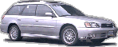
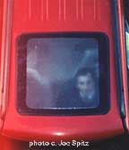
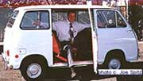

EVERYTHING
SUBARU: RESEARCH SPEC PAGES
all the
research you want
price/invoice, specs, colors, options,
parts, photos, links..
Outback,
WRX, STi, Forester, Impreza, Baja, Legacy, RS, GT, SVX, Brat, 360, XT,
Sport, Loyale...
RESEARCH SPEC PAGES
price/invoice, options,
colors, photos, links, parts...
select year Current
I
Archived
Interest
rates, rebates
Subaru-speak?
terms
Maintenance
schedule
Warranties
safety:
airbags, child seats
Keyless
entry/alarm use, yearly changes
BUYING?
Subaru
sales My special prices, FAQ
Used
Subarus other cars in Seattle.
Links
all kinds, links swapped?
Classifieds
buy/sell
US/Ca Subaru, Bricklin.
Alaska/Hawaii
all out of state sales
VIP
program
Online
order form
About
Carter history, directions
Customer
testamonials
Subaru
Pictures new & old
SITEMAP
more...
Safety
Inst
Hwy Safety crash ratings
Carfax
lemon checker
more links below
Carter Sponsor of
 |





 bio bio
|
NEWS: FEBRUARY
2003
new Ends
2/28 Interest
rates 0% - 3.9% Ends 2/28
new Feb 5-
new midyear models: 2 Outbacks,
Baja
Sport
new WRX
and STi specs
new safety
airbags, child seats, LATCH...
new Keyless
entry/alarm instructions, yearly changes
Links
all kinds. Links swapped.
AllSubaru.com
discount, perf parts
Subaru
classifieds. Free buy/sell ads, all models/years
This research site by Joe Spitz
Buying in Seattle?
I offer low internet prices
shipping available
call 206 769-7821 or email
|
my schedule
Carter Subaru #1 Volume
Dealer Washington 2002
Discount Dealer: members/employees-
AAA, Costco, Sam's Club, USAA, AARP, any Washington, Federal or Military
empl, Adobe, Amazon, Boeing, Blue Cross, Expedia, Group Health, Microsoft,
Paccar, Safeway, Safeco, Weyerhauser, RealNetworks, Immunex
Airlines: NW, Alaska, Hawaii, Delta, United,
SouthWest, etc
Credit Unions: Boeing, Alaska, US, 1st
Tech, Wa St. Teachers, USPO etc
Ship-n-Save to Alaska, Hawaii, Idaho,
Oregon, California, Montana or anywhere in the US

Thank you for visiting, and enjoy the
site.
Brochures mailed. Just let me know which
one.
Web & Subaru tips, links, comments
welcomed
Photos and formatting c. J. Spitz.
Unauthorized reproduction of any part
or page is prohibited.

The Forester has a large sunroof.
Yes, that is me inside and yes, it was
raining.

|
|
|
|
About Subaru..
There are currently 4 models: Impreza,
Forester, Legacy, and Baja.
These are available in a variety of styles
and prices.
Visit my Subaru New Model "Subaru
Snapshot" of all Subarus to help you decide which one is right for
you.
Subaru History: In 1967 Malcolm
Bricklin and Harvey Lamm form Subaru of America (SoA) and contract
with Fuji Heavy Industries to import the Subaru and in 1968, the first
year, import 332 cars. In 2000 SoA sold 172,216 cars which is 14,351
per month or about 20 cars per hour around the clock every day of the year.
The first U.S. Subaru is the 360. This
very small rear wheel drive minicar had a 2-stroke, 25 horsepower 356 cc
engine (thus the 360 name), weighed under 1000 pounds, got 66.3 mpg, went
0-50 in over 37 seconds. and cost $1,297. It came in a few models: 2 door
sedan, then the "Young S" 2 dr sedan, minivan (that's me in the white 5
door van below), a truck version, and even a mini race car too. There may
have been as many as 6000 of these imported through 1969, though they weren't
exactly a best seller.
Check out my classifieds
page to buy or sell one.

Carter's 1969 Subaru 360 5 door van is
117.9" long (not for sale)
In the 1971 model, Subaru of America introduces
the very first Japanese mass production front-wheel-drive car to the US,
the Subaru 1000 (1st made in Japan in 1966). The 1000 costs $1,699 and
introduces the Boxer engine still used by Subaru. In 1975 4x4 is available.
Subaru leads the way!
In the 1990-00s Subaru is the top selling
wagon in the US. There are 630 dealers across the country, and over 90%
of Subaru all-wheel-drive cars sold the past 10 years are still on
the road. Buy/sell your Bricklin SV-1
on my Bricklin
classifieds- sections for wanted to buy and sell- cars, books, manuals
etc
1968 Subaru's first year.. for those
who remember it and those who don't..
President Johnson doesn't run for re-election.
Martin Luther King is assassinated in
April and Robert Kennedy in June.
In Vietnam it's the Tet Offensive.
The Redwood National Park is established
in California.
Clothing designer Ralph Lauren is 29 and
just starting out
A Hershey Bar is 5 cents.
Volkswagen has 57 percent of the U.S. import
market, selling 569,292 vehicles in the United States. Beetles are under
$1,800 and outsell Mustang, Pontiac, Chevelle, Fairlane, Fury, Buick, Oldsmobile,
and Chrysler. (statistics from MS Bookshelf 1997).
I have tried to provide the initial information
so you can determine your interest in Subarus from the comfort of your
home or work. If you're interested in a new or used Subaru or other used
vehicle please contact me.
Thank you.
Subaru tips and web page comments
are always welcomed.
Interested in affordable national internet
access? Contact Eskimo
North. Say you saw Joe Spitz's page.
SoA sponsorships, outdoor affiliations
etc
visit
my factory Discounts
Page for VIP benefits
Leave
No Trace foundation
Subaru's
LNT traveling trainers
American
Canoe Association
Masters
Rowing Association
International
Mountain Bike Assoc
National
Ski Patrol Subaru is the official vehicle of the NSP
Professional
Ski Instructors of America Subaru is the official vehicle of the PSIA
American
Cross Country Skiers (AXCS)
American
Assoc of Snowboard Instructors http://www.aasi.org
American
Speech-Language-Hearing Association (ASHA)
National
Association for Home Care (NAHC)
The
Geological Society of America
Sports
Car Club of America (SCCA)
airbags, safety concerns, recalls
As of 1998, Subaru air-bags are 'de-powered'.
All Foresters and most models made after about Sept. 1998 have these newer
bags. For starting date and actual VIN number of vehicle using these, please
go to my webpage for the 1998 model in question.
-
Air
Bags Government resource to get information about, and permission
to disable etc airbags.
-
Airbags
who is at risk and who is safer with them by The Insurance Institute for
Highway Safety
-
Crash
test data on many Subarus from the Insurance Institute for Highway
Safety.
-
Recalls,
Technical Service Bulletins from alldata.com.
Pick the make, model and year for recalls, Technical Service Bulletins
(TSBs), and other information.
Cars, Credit Agencies, Licensing, auto
shows etc etc
Equifax
- credit bureau
Experian
(formerly
TRW) credit bureau
Trans
Union credit
bureau
Carfax
lemon checker
Edmunds
cars.com
NADA
book
values
Kelly
Blue Book book values
Auto
Shows, a list of auto shows around the US
links
page a full page of all sort of links
what's happening in Seattle?
Live
traffic camera
- Traffic in Seattle. I use this a lot which is maybe why I don't get out
much ...
Washington
State highway and mountain pass road condition reports.
If you are in the market for a new
or used Subaru or any brand of used vehicle and live in the Puget Sound
area, I can help.
Remember, if you're buying in Seattle,
call Joe Spitz (206)
769-7821, email
I'm solely responsible for content and
have tried to provide the initial information so you can determine your
interest in Subarus from the comfort of your home or work. Thank you.
Collect Books-
mystery,
fiction, autobiographies, signed 1st editions. If you have books for sale
please call.
Seattle
used bookstore list: A very good site put out by local bookseller Recollection
Books.
Twists,
Slugs and Roscoes: A Glossary of Hardboiled Slang If you read older
mysteries or maybe just want to talk tough like they did in the "Maltese
Falcon" and other books and movies of bygone days check out this dictionary
McMurtry
bibliography. I've done a very basic list of his books. Author Larry
McMurtry's first book was "Horseman, Pass By" which was filmed as "Hud".
His other books and movies include "The Last Picture Show", "Terms of Endearment",
"Lonesome Dove" etc. McMurtry has been a success, with his books, movies
and even selling books through his used bookstores "Booked Up in Texas
and Washington, D.C.
Again, Thank You for visiting
Bye, Joe Spitz
contact
2003
What's the car for all the right
seasons?
Why, a Subaru of course.
| This site is a member of
WebRing. To browse visit here. |
|